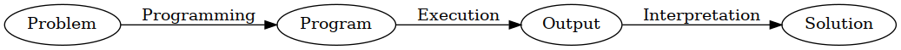
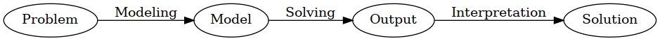

Created: 2021-09-14 Tue 23:21
Program
% Cats are animals. X is an animal if X is a cat.
animal(X) :- cat(X). % ~X~ is a /Variable/
% ~tom~ is a cat.
cat(tom). % ~tom~ is an /atom/ (constant).
Answer
Answer: 1
cat(tom) animal(tom)
SATISFIABLE
Models : 1
Program
% Cats and dogs are mammals
mammal(X) :- cat(X).
mammal(X) :- dog(X).
% Mammals are animals
animal(X) :- mammal(XY).
% Mammals sleep
sleeps(X) :- mammal(X).
cat(tom).
dog(spike).
Answer
Answer: 1
cat(tom) mammal(tom) animal(tom) sleeps(tom)
dog(spike) mammal(spike) animal(spike) sleeps(spike)
SATISFIABLE
Models : 1
Programming

Modeling

Potsdam's ASP collection Modeling (56/112)
clingo uses a two-phase pipeline.
gringo)
clasp)